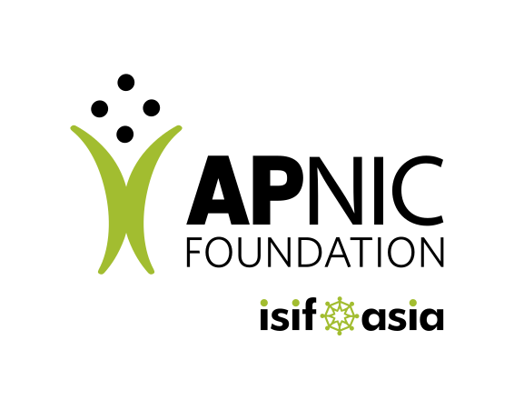

Funding & Partners
Supported by leading organizations in the Asia-Pacific region

Funder
APNIC Foundation & ISIF Asia
LLMNetOps is funded by the APNIC Foundation through the ISIF Asia 2025 grant program — an initiative that supports projects developing ICT solutions in the Asia-Pacific region, with a focus on innovation, capacity building, and community development.
View project on APNIC Foundation →
Implementer
Universitas Brawijaya
The project is implemented by Universitas Brawijaya, Indonesia — leading research, curriculum development, and workshop delivery for IDREN member institutions.
In collaboration with
IDREN Member Institutions
Indonesia Research and Education Network (IDREN) member universities participate as pilot sites and beneficiaries of the LLMNetOps training and deployment program.